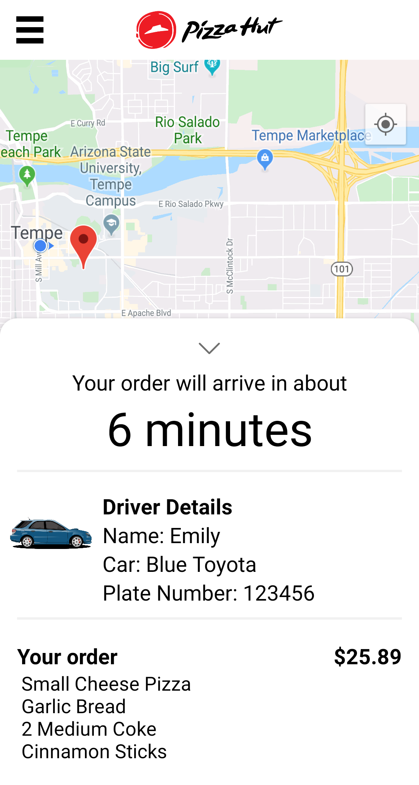
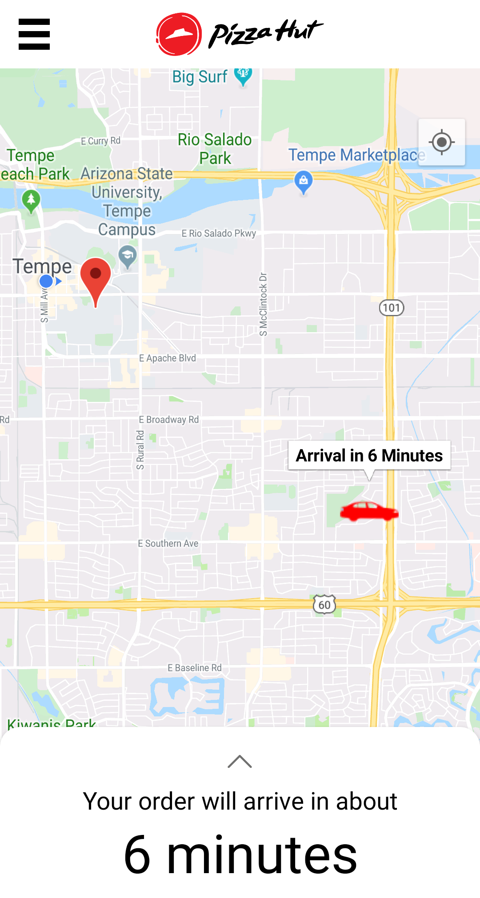

Apps
Psyche Inspired
I was given the remarkable opportunity to design the app for the nationwide Psyche Inspired project in 2020, working with Meteor Studio at ASU.
The app is available on Android and iOS.
Features
- Pan and zoom to see works in detail
- Pagination and slide displays
- Music player
- Tap to play/pause videos
Process
Professor Robert LiKamWa asked our class to create sample apps for the Psyche Inspired project in Unity. The best app would be chosen to become the official app for Psyche Inspired.
As an artist myself (or at least someone who likes to think I am), I focused on how to showcase the work as clearly as possible. I chose to use slides in some areas so that the art could appear larger. I also color-corrected and enhanced photographed artwork to restore its original look.
I felt the map would showcase the geographic diversity of the artists.
I feel honored that my design was chosen. Please feel free to download the app. The art is truly beautiful.
Pizza Hut App Prototype
I designed the UI for a prototype of a new app functionality for Pizza Hut: driver tracking. Built in Android Studio, the app features a map with the driver's location, a time estimate, and a menu that can be swiped up to show more.
Pizza Hut has given me permission to share screenshots online.
 The app features a bottom sheet that can be pulled up and down.
ride sharing apps.
I worked on a team of 4 alongside Miguel Guerra, James Stievater, and Yu Ling for our senior capstone project. Our supervisor, Helen Chavez, organized the project and helped us interface with Pizza Hut.
Research
At the beginning of the project, I wrote a detailed survey on user preferences and experiences. Our main goal was to see how much experience users had with similar apps and what they wanted to see in a driver tracking app.
We surveyed 182 ASU students, recruited via classes. They viewed the most important features of an app as being:
- Driver tracking
- Delivery time estimates
- Push notifications
- Ability to communicate with driver
Two thirds of the students typically did not contact the driver when getting food delivery. The majority had ordered food from at least one food delivery service (such as Postmates or Uber Eats) before.
Based on this information, we chose to focus on the first 3 priorities and save communication with the driver for later.
presentation
Creation
The prototype's first draft looked very different from the final draft, with buttons instead of a bottom sheet. We switched to a bottom sheet later in order to mimic ride sharing and food delivery apps, since many customers were already familiar with these.
I wrote the code for the UI in Android Studio with the help of experienced programmer Vrushabh Jambhulkar.
Testing
Before we ran official studies, I ran many unofficial tests, showing the app to friends and acquaintances and watching them interact with it. This offered valuable insights into ease of use. We didn't have money for a focus group, but I ran an unofficial group with family members that proved invaluable.
By the time we ran official studies, the app was intuitive. One user had even opened the bottom sheet to look around before I started asking questions.
My personal favorite feature is the caret at the top of the sheet, which swivels as you open or close the sheet.
I'm happy with our final product and I hope it helps Pizza Hut as they expand their app.